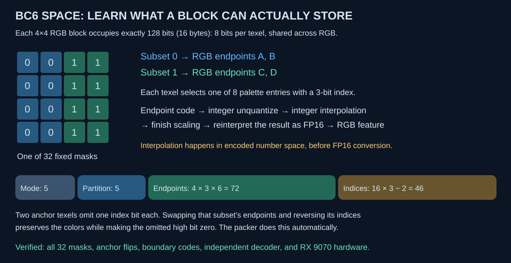
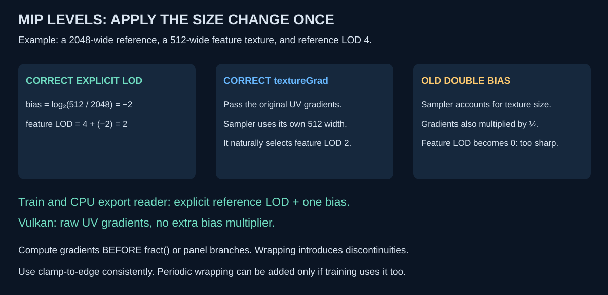
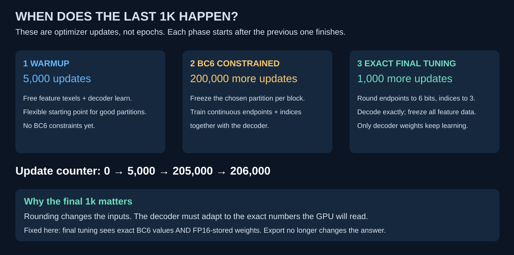
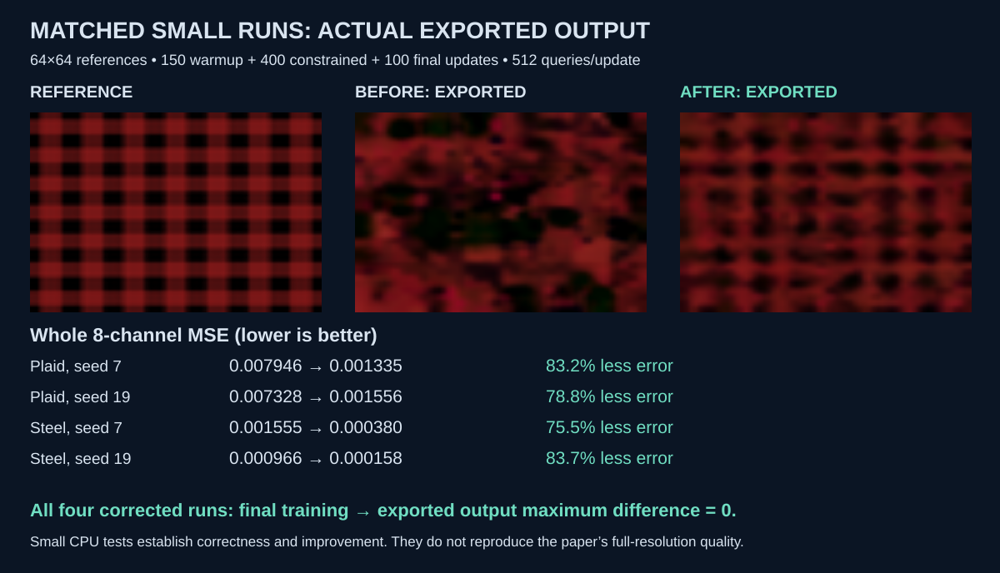
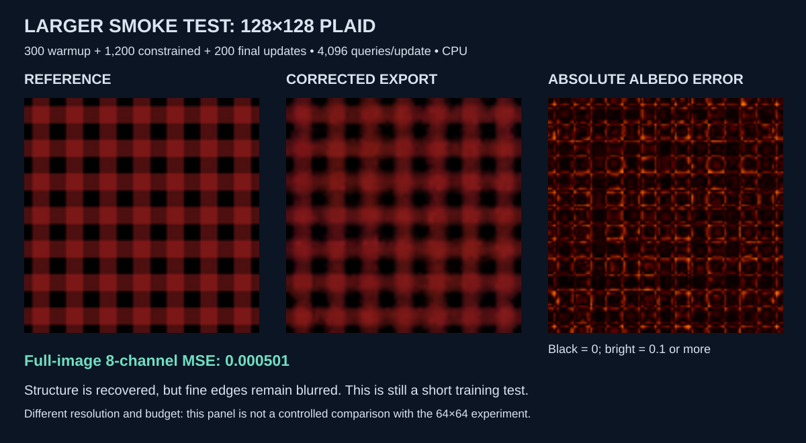
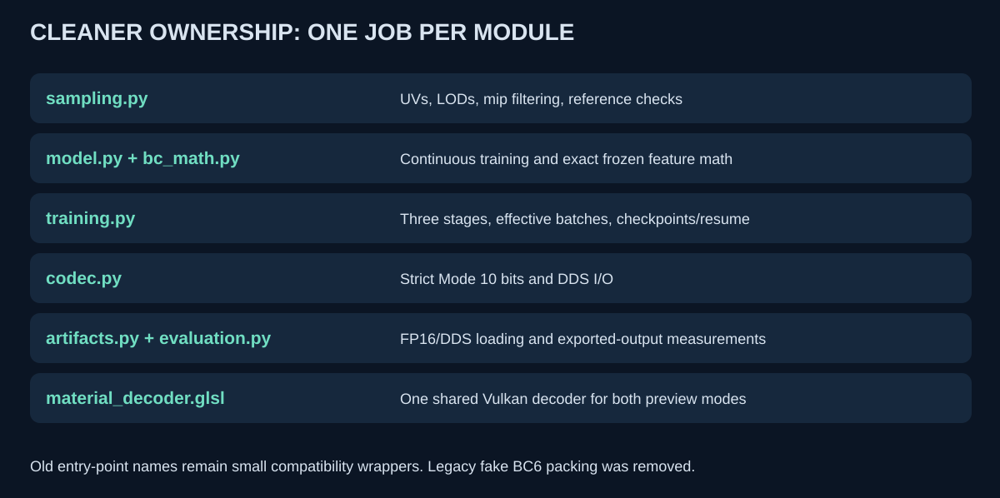
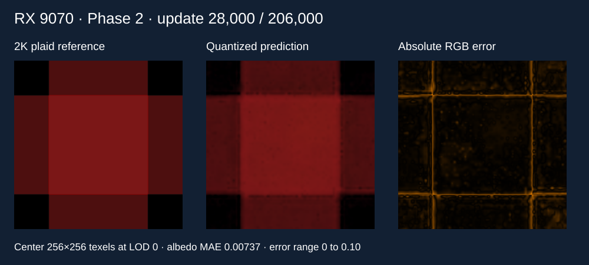

IMPLEMENTATION REVIEW • 6 NOVEMBER 2026 • FULL GPU RUN LAUNCHED
How neural material compression works—and what we fixed
Pick one square in the plaid and follow its numbers from a compressed texture to the shader. That journey shows how the bake works and where our trainer and the GPU disagreed.
Start with one BC6 block
Imagine zooming in until you can count four little squares across and four down. Each square is a texel, one entry in a texture. Each holds three numbers. In a photograph those numbers might mean red, green and blue. In our texture they are clues a small neural network learns to read.
BC6H is a GPU texture format that squeezes those 16 triples into 16 bytes. For comparison, writing out all 48 numbers at two bytes each would take 96 bytes. The saving comes from sharing values between neighbors. When a shader asks for a texel, the GPU finds its block and reconstructs the triple. The DDS file holds these blocks.
We use a variation called Mode 10. Think of each block as carrying two little paint strips. The GPU answers three questions to read a texel. Which strip? A stored pattern called a partition assigns each square to strip 0 or 1. What is on that strip? Two stored triples called endpoints define eight choices between them. Which choice? One small index at the texel picks the entry for all three channels.

BC6H supports HDR RGB values and has no alpha channel. A 4×4 block takes 16 bytes. Its decoder runs before texture filtering. We use the two-subset Mode 10 with six bits per endpoint component and three bits per texel index. Other modes have different layouts; calling something “BC6” does not make arbitrary 128-bit data valid. Microsoft’s BC6H specification.
Partitions, endpoints and indices
A block chooses a mask dividing its 16 positions into two subsets. Subset 0 uses RGB endpoints A/B; subset 1 uses C/D. For each subset, the endpoints define a palette. A texel’s index chooses one of eight entries. All three channels share that texel index. A block therefore cannot independently choose arbitrary values for every channel at every position.
The exact bit budget is 5 mode bits + 5 partition bits + 72 endpoint bits + 46 index bits = 128. Why 46 rather than 48 index bits? Each subset has a designated anchor texel whose index omits its highest bit. If that bit would be one, the encoder swaps the subset’s endpoints and replaces every index i in that subset with 7−i. The palette is reversed, so its decoded colors stay the same.
“Mode 10” is the table’s mode name, not the integer written into the five mode bits. This format’s code is binary 11110. The packer also follows an interleaved endpoint-bit descriptor; it cannot simply concatenate endpoint numbers in an invented order.
Follow one endpoint code through the exact BC6H math
Why “BC6 space” is not ordinary color interpolation
A six-bit endpoint component is an integer q from 0 to 63. The exact unsigned path expands it into an integer representation U. The intermediate integer is not yet a real-valued color:
U(0) = 0
U(63) = 65535
U(q) = floor((65536 × q + 32768) / 64), otherwise
weights = [0, 9, 18, 27, 37, 46, 55, 64]
I = floor(((64 − weight[index]) × U(A) + weight[index] × U(B) + 32) / 64)
H = floor(31 × I / 64)
feature_value = reinterpret H as an unsigned finite FP16 bit pattern
These are the calculations implemented in our exact tensor decoder and bit decoder. They are validated against an independent implementation and actual hardware. Notice that conversion to a real floating-point value happens after interpolation. Fitting an ordinary straight line between the floating-point endpoint colors therefore solves a different problem.
FP16 (“half precision”) stores a number with a small exponent and mantissa. The exponent changes the scale of the number; the mantissa selects steps within that scale. Positive values have much denser spacing near zero than at large magnitudes. For normal positive half values, the value is 2^(E−15)×(1+M/1024); for exponent zero it is M×2^−24. In the unsigned BC6 path used here, the final patterns stay within the nonnegative finite range, including zero and 65504. Bit reinterpretation is not the same as converting the integer H to a decimal float.
A useful boundary example: endpoint code 20 decodes to about 0.03015, while code 30 is about 0.88672. These are feature values, not necessarily display colors. Small code changes can have nonlinear effects; wrong decoding can create very large errors.
Graphics prerequisites, from the beginning
Pixels, texels and UV coordinates
A pixel belongs to the image on your screen. A texel belongs to a texture stored in memory. A material texture is a rectangular table of numbers. UV coordinates describe where to read that table: U goes across it, V goes along the other axis, usually between zero and one. A mesh supplies UV coordinates at its vertices; the renderer interpolates them over triangles.
A 64×64 image has 4,096 texels. The center of texel (x,y) is at UV ((x+0.5)/64, (y+0.5)/64). The half-texel offset matters: sampling boundaries instead of centers shifts or blurs a comparison.
A material is several images with different meanings
| Channels | Meaning | Our training values |
|---|
| Albedo RGB | Base color. Not a photograph with lighting baked in. | Stored sRGB-encoded samples, 0…1 |
| Normal X,Y | Small surface-direction changes in the surface’s local tangent frame. | −1…1, OpenGL-style Y convention |
| AO | Ambient occlusion: a local occlusion signal. | Source 0…1 remapped to −1…1 |
| Roughness | Controls the spread of specular reflection. | Source 0…1 remapped to −1…1 |
| Metallic | Controls the metallic material response. | Source 0…1 remapped to −1…1 |
The decoder produces eight numbers: 3 + 2 + 3. Normal Z is reconstructed as √max(0,1−X²−Y²), then the vector is normalized. A normal-map preview maps all three components from −1…1 to 0…1. Remapping only X/Y makes the preview inconsistent.
Color encoding matters. sRGB is a nonlinear encoding of visible color; roughness and normal components are data, not sRGB colors. This implementation compresses stored albedo samples directly. A physically lit shader must convert the reconstructed albedo from sRGB to linear light before shading. The current Vulkan app is a map viewer, not a full physically lit material renderer. Its UNORM display target avoids applying another sRGB encoding to the already encoded preview.
Filtering and mipmaps
UVs usually fall between texel centers. Bilinear filtering blends the four neighbors. Bicubic filtering uses a wider neighborhood and can slightly overshoot the original value range. A mip pyramid stores progressively smaller images: 128², 64², 32², and so on. When an object is far away, many texture texels cover one screen pixel; selecting a smaller mip suppresses aliasing.
LOD means “level of detail.” LOD 0 reads the largest mip, LOD 1 the next, and LOD 1.4 blends levels 1 and 2. Trilinear filtering is bilinear filtering within each of two mips followed by a blend between them. The learned feature mips are separate trainable arrays; they are not regenerated from the top feature mip after every update.

At texture edges, the sampler needs a rule. Clamp repeats the nearest edge texel; wrap reaches the opposite side. Mixing those rules between training and runtime changes features along the border. We now use clamp consistently. For tileable materials, periodic sampling would need an intentional change to both paths.
What the neural network actually learns
Instead of storing all eight material channels directly at full resolution, we store four smaller RGB feature pyramids. These RGB triplets are latent features: learned numbers useful for reconstruction. They are not albedo, normals or roughness on their own. Their colors can look strange and still be useful.
At one UV and scale, sample all four feature pyramids. That gives 4×3 = 12 values. The decoder turns them into 16 intermediate values, clips negative intermediate values to zero with ReLU, then produces the eight material outputs:
x = concatenate(sample(feature_0), …, sample(feature_3)) # 12 numbers
h = max(W1 × x + b1, 0) # 16 numbers
y = W2 × h + b2 # 8 numbers
A matrix is just a table of coefficients. Each output neuron adds up input×coefficient products and a bias. There are 192 + 16 + 128 + 8 = 344 weights and biases. At two bytes each, the FP16 weight file is only 688 bytes. Most storage belongs to feature textures.
The feature arrays and decoder are learned together for one material. This is not a general-purpose network that recognizes every fabric or metal. Sharing information between channels can save space, but a small decoder also has limited ability to separate fine patterns. Remaining blur or channel interference can be a capacity/optimization issue after representation correctness is established.
What trains during warmup, the 200k and the last 1k?

Warmup means learning an easier version of the problem first. Initially each feature texel can change freely. The tiny decoder learns how to turn those features into material values. Once useful structure emerges, we fit legal BC6 blocks to those features. This gives each block a sensible partition, endpoints and indices.
200k means 200,000 optimizer updates in the constrained stage, in addition to warmup. The network and the block parameters learn together. Partitions stay fixed because changing them abruptly changes which pixels belong to which endpoint pair.
The last 1k happens after those 200k. We round the endpoints and indices to their storage precision, freeze the resulting feature textures, and adjust only the decoder. This repairs the effect of rounding on its inputs. Our corrected implementation also makes this stage see FP16-stored weights. With the stated schedule, global update numbers are 1–5,000, 5,001–205,000, then 205,001–206,000. The paper discusses 205k main training updates and separately describes another 1k for final tuning. Paper §§6.1 and 6.4.
An epoch is one pass through a fixed dataset. Here the trainer creates fresh UV/scale queries repeatedly, so “update” or “iteration” is the useful unit. A batch is the collection of queries used to compute one update. Matching update counts with a much smaller batch does not match the amount of training evidence.
How training can work through a compressed format
Training adjusts parameters to reduce a loss. Here the loss is mean squared error: subtract predicted channel values from target values, square those differences, then average. Backpropagation computes how changing each parameter would change that loss. Adam uses the gradients and running statistics to decide updates. The learning rate sets the update scale.
Exact integer rounding has zero derivative almost everywhere and jumps at boundaries. It is not a useful direct training function. During constrained training we use continuous endpoint/index coordinates, interpolated palette weights, and a differentiable approximation of decoding. We then switch to exact integer decoding for final tuning. The approximation is a training aid; it is never treated as proof that an export matches.
Endpoints and indices are represented with sigmoid-bounded parameters. The warmup feature arrays use softplus to remain nonnegative. The constrained endpoint extension now includes the correct special endpoint boundaries. Final tuning caches the exact decoded feature mips, freezes their parameters, and optimizes only the decoder. Its forward pass uses FP16-rounded weight values while gradients update the underlying trainable weights—an explicit straight-through approximation for storage quantization.
| Stage | What changes | Default learning rates and decay |
|---|
| Warmup, 5k | Free features + decoder | Features .05, decoder .001; ×.9995 per update |
| Constrained, 200k | Endpoints + indices + decoder; fixed partitions | Features .01, decoder .001; ×.9999 per update |
| Final tuning, 1k | Decoder only; exact fixed BC6 features | .0005, no decay in this implementation |
The first two schedules follow the stated experimental recipe. The .0005 final-stage rate is an implementation choice, not a verified rate specified by the paper. The .9999 decay becomes extremely small after 200k updates; we preserve it for the baseline rather than silently changing the experiment. A different schedule should be tested separately.
The paper uses 512×512 queries per update: 262,144. The former 4,096-query default supplied 64 times fewer samples for the same update count. The corrected default restores the effective batch size. A microbatch lets us process that batch in smaller pieces: each piece’s mean loss is weighted by its fraction of the full batch, gradients accumulate, and Adam steps exactly once. Stepping Adam after every small piece would be a different training schedule.
The default uses one random continuous scale per effective batch. The matched diagnostic runs instead use independent scales per query in both versions to hold their sampling policy constant. The implementation defines valid reference levels as 0 through mip_count−1; the paper’s notation for the endpoint S is ambiguous. This convention is documented rather than silently treating an out-of-range extra mip as real data.
What was wrong, and what changed
| Problem | Correction | Evidence / scope |
|---|
| Training reversed subset ownership. | Subset 0 consistently uses endpoints 0/1; subset 1 uses 2/3, including initialization. | All masks and asymmetric fixtures tested. |
| Final tuning still used a continuous surrogate. | Cache exact integer-decoded feature mips and freeze them. | Final training/export output gap is zero in all four matched runs. |
| CPU inference loaded FP32 debug weights. | Load the 688-byte FP16 runtime blob. | Export still renders after deleting the debug checkpoint. |
| Initialization scored a float-space line. | Search all masks with exact decoded palettes and endpoint-code refinement. | A valid local search, not a proof of globally optimal BC6 encoding. |
| LOD bias applied twice; inconsistent borders; unstable derivatives. | Unscaled textureGrad gradients, computed before wrapping/branches; clamp sampler. | Shaders compile; actual app ran with validation enabled. Full numeric shader/filtering parity remains a separate test. |
| Steel reference had signed albedo; previews remapped inconsistently. | Rebuild from source maps, validate channel ranges, normalize/remap normal previews. | Old malformed reference rejected instead of silently accepted. |
| Weak export validation and conflicting defaults. | Strict version/dimensions/byte lengths/mips/finite weights; one CLI and consistent stages. | Corrupted DDS and weight files rejected; microbatch and deterministic resume tested. |
The low-level codec was already much closer to correct than the training path. Replacing the whole BC6 encoder would not have fixed reversed training subsets. The independent decoder tests still cover signed packets, but signed neural training is unsupported and rejected. Historical screenshot artifacts cannot be assigned uniquely to one defect because the original weights and logs no longer exist.
What improved in actual runs

The matched experiment uses two materials, two seeds, 64×64 references, four feature pyramids at 32/16/8/4, and the same 150/400/100 update budget with 512 queries per update. Both versions train from the same seeded initialization and are evaluated from exact quantized features and FP16 weights. The old monolithic source is preserved outside the working implementation for this comparison. These tests change the fixes together; they are not individual ablations attributing the entire gain to one line.
The raw eight-channel MSE falls by 75.5%–83.7%. The final training-versus-export maximum error falls from 0.1626–0.6609 to exactly zero on the CPU comparison. The preview still has blur and missing detail. “Correct representation” and “high-quality reconstruction” are different milestones.
Six regression tests pass, including 2,048 random signed/unsigned blocks against independent bcdec, 256 tensor-versus-byte block cases with extrema across all 32 masks, export-file rejection, edge/last-mip sampling, microbatch consistency, and a checkpoint captured partway through constrained training. Resuming that checkpoint produces bit-identical final tensors to uninterrupted CPU training.
A separate Vulkan compute probe on the RX 9070 returned all 49,152 tested RGB values exactly equal to the independent decoder. The newly trained plaid export also ran in the windowed Vulkan viewer with validation active and no validation errors. A loader warning reports duplicate AMD layer registrations; it is not a shader or texture validation failure. This hardware probe checks block decoding, not every filter/MLP operation in the rendered frame.

Additional smoke checks exercise the normal CLI, checkpoint, export, inference and plotting paths. See the accompanying raw reports for the 64×64 steel run and the larger 128×128 plaid run. Evaluation across integer and fractional LODs is available through python -m nnpbr.evaluation. Its normalized PSNR rescales signed-channel errors by ½ to compare channel ranges; raw training MSE does not. Neither metric should be compared directly to paper figures without matching material, resolution, scale and preprocessing.
How to read the implementation

Start at nnpbr/cli.py: it prepares the reference, constructs the model, writes a manifest, and calls the training stages. Follow training.py to see when parameters are initialized or frozen. In model.py, follow forward_bc → feature sampling → decoder. Compare bc_math.py (tensor calculations) with codec.py (actual bits). Finally, artifacts.py is the boundary that must agree with the runtime.
The old large entry points are now compatibility wrappers. Production and debug preview shaders include one shared decoder. Dead fake packing code was removed. Unused historical test shaders were removed from the working tree; they remain available in Git history. The implementation remains straightforward PyTorch; decoding full feature mips per microbatch is still a performance cost. Correctness tests now allow that cost to be optimized without guessing whether output changed.
Checkpoints save model, optimizer, scheduler, phase, completed update, RNG state, reference fingerprint and model dimensions. Resume rejects a changed reference or incompatible configuration. Runtime files are separate from these checkpoints: four DDS pyramids, a FP16 weight blob, and versioned metadata. Export previews are decoded from the packed bytes; they are not generated from an easier surrogate.
Approved full GPU run
The approved full run launched on the RX 9070 using native Windows PyTorch 2.14.0 and AMD ROCm 10.1. The GPU passed CPU comparison of forward values and gradients, a short three-stage run, and export parity. The 2K reference and all nine mips were rebuilt and validated. The local run saves its log and manifest under runs/full_plaid/training/.
- Rebuild a 2048×2048 plaid reference from the existing 2K source maps. Keep steel as an additional material. Do not upscale the old 1K training tensor and call it a 2K reference.
- Use the paper’s BCf-0.5K feature configuration: 512/256/128/64 with 8/7/6/5 mips, 12→16→8 decoder, unsigned Mode 10. This matches the repository’s intended feature budget; BCf-1K would use 1024/512/256/128 and cost more memory.
- Use 5,000 + 200,000 + 1,000 updates and an effective batch of 262,144. Start with 8,192-query microbatches and adjust only the microbatch size to measured memory limits. Keep a fixed seed and the recorded source/reference hashes.
- Before the long run, measure a short GPU training segment at full spatial dimensions. Verify finite loss/gradients, checkpoint resume, and exported parity. Do not estimate GPU runtime from the paper’s RTX2070 timing or the small CPU tests.
- Evaluate held-out UVs at integer and fractional LODs, per-channel error, normalized PSNR, the 99th-percentile error and spatial error images. Save stage transitions and show SVG comparisons. Do not accept a lower random multi-LOD loss as proof that mip0 improved.
- After reviewing that baseline, test one change at a time: more feature resolution, better initialization search, an altered learning-rate schedule, or revised channel weighting. A wider decoder requires an explicit runtime-contract change.
The full 262,144-query batch fit in one GPU pass, so the launch uses that microbatch size. The measured constrained probe peaked at 0.43 GB of PyTorch allocations. The run saves checkpoints every 1,000 updates. GPU measurements.
What “paper implementation” means here
This implements the paper’s core eight-channel neural-material workflow: trainable mipmapped features, BC-compatible block parameterization, fixed partitions, a tiny MLP, exact BC6 export and hardware sampling. It is not yet a reproduction of the paper’s entire benchmark suite, all feature configurations, optional displacement channels, or lit-scene performance measurements. The original authors’ encoder and every implementation detail are not available in this repository; our initialization search is an explicit, tested engineering choice.
There are limits in the method itself: fixed partitions can settle on a poor choice, each block has only two palette families, the decoder is tiny, and some fine details can interfere across channels. Those limitations remain after fixing incorrect subset labels. We should judge the next model using controlled comparisons at the same memory budget, not assume that 200k updates guarantee a particular screenshot.
Sources and reproducibility
Original paper • BC6H specification • Independent bcdec decoder • Commands and supported contract • Matched raw results • Steel mip evaluation • New Vulkan preview
Baseline revision: dfa7e71aecddd01f319c4e371d538c0a14e1f967. Current fixes are local working-tree changes. Small tests used Python 3.12, PyTorch 2.15.0+cpu, two CPU threads. The original missing model was not recovered or retrained at its original budget. Before/after observations come from the new controlled experiments described above.
The mistake in our code
Back to the top-left square. Substitute zero for mask in both lines below. The old line keeps pair1. The fixed line keeps pair0, just as the GPU does.
mask = 0 for subset 0, 1 for subset 1
pair0 = feature from endpoints A and B
pair1 = feature from endpoints C and D
Old training feature = mask * pair0 + (1 - mask) * pair1
Corrected feature = (1 - mask) * pair0 + mask * pair1
More updates could lower the old training loss while the exported image still had misplaced features. Final tuning also used approximate decoded values, and the old Python preview loaded full-precision decoder weights. We now freeze exactly decoded BC6 texels during final tuning and read the FP16 weights that ship with the material. Training code · Runtime reader.
The corrected preview still looks soft for a different reason. Look at the reference plaid crossing in the image below. The corrected prediction puts the crossing in the right place, but spreads its edge across several texels. The 128×128 experiment used a 64×64 largest feature map and 1,200 constrained updates. Its highest albedo errors trace the stripe edges. The full run will test how much detail the approved larger model and budget recover.
Across two materials and two seeds, all four matched tests reduced exported-image MSE by 75.5–83.7%. At mip zero the largest final training-to-export discrepancy fell from 0.163–0.661 to zero in those comparisons. These measurements cover the fixes together. The original screenshot survives, but its weights and training log are unavailable, so individual historical hotspots cannot be traced to specific blocks. Measurements.

The update number identifies this checkpoint. Warmup uses free features. The final quality comparison uses the exported DDS and FP16 decoder.